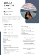
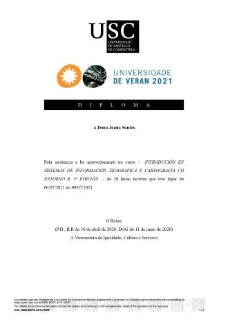
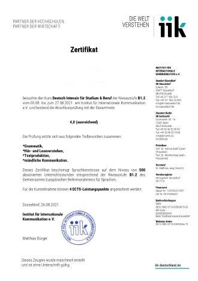
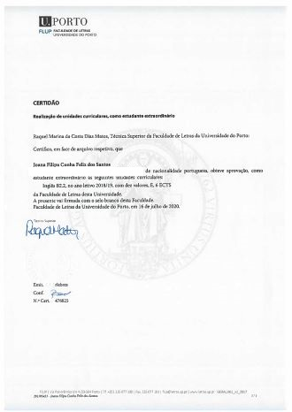
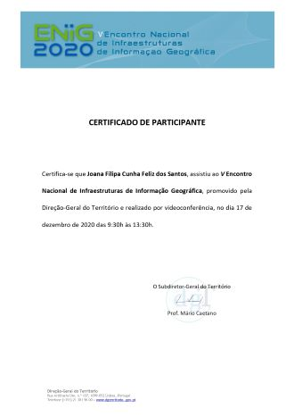

SOBRE MIM
Joana Filipa Santos
Olá, sou a Joana. Sou natural do município de Paredes, distrito do Porto. Gosto de aprender sobre assuntos diversos, viajar e caminhar na natureza.
Atualmente estou a frequentar o Mestrado em Sistema de Informação Geográfica e Ordenamento do Território na Faculdade de Letras da Universidade do Porto.
- Nacionalidade: Portuguesa
- Naturalidade: Paredes
- Idade: 22
- Grau: Licenciatura
- Carta de Condução: Tipo B
Para mais informações, descarregue o meu Curriculum vitae:
Redes Sociais
Contacto
up201705453@up.pt
COMPETÊNCIAS
Em constante aprendizagem...
Softwares
- ArcGis - ArcGis Pro
- PostgreSQL - PostGIS
- RStudio
- SPSS
- QGis
Ferramentas
Office
- Word
- Excel
- PowerPoint
- Publisher
Linguagens
Programação
- Python
- R
- SQL
Idiomas
- Português
- Inglês B2
- Alemão B1
- Francês A1
WORKSHOPS E CERTIFICADOS




- Diploma do curso - "Introdução em Sistemas de Informação Geográfica e Cartográfica com a entorno R 5ª edição" 06-09 julho 2021
- Certificado do curso - "Alemão Intensivo para Estudo e Trabalho - B1.2", Instituto de Comunicação Internacional de Berlim, agosto 2021
- Certificado de realização de unidade curricular - Inglês B2, 2020
- Certificado de Participação - Encontro Nacional de Infraestruturas de Informação Geográfica ENIG, 17 de dezembro de 2020
- Certificado de Participação - Open Gis Days 2020
HOBBIES E INTERESSES
| NATAÇÃO | IDIOMAS | XADREZ |
| PIANO | VIAJAR | VOLEIBOL |
| LER | GINÁSIO |